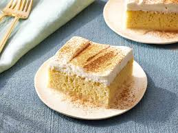

Tres Leches Cake

Description
A rich, moist sponge cake soaked in a creamy three-milk mixture and finished with fluffy whipped cream for a decadent treat.
Ingredients
Cake
- 1 1/2 cups of all purpose-flour
- 1 tsp of baking powder
- 1/2 cup of unsalted butter
- 1 cups of white sugar
- 5 eggs
- 1/2 tsp of vanilla extract
Milk Soak
- 2 cups of whole milk
- 1 (14 oz) can of sweetened condensed milk
- 1 (12 fl oz) can of evaporated milk
Whipped Cream
- 1 1/2 cups of heavy whipping cream
- 1 tsp of vanilla extract
- 1 cup of white sugar
Steps
Making the Cake
- Gather the ingredients.
- Preheat the oven to 350°F (175°C) and grease a 9 x 13 inch baking pan.
- Sift the flour and baking powder together; set aside.
- Beat sugar and butter together in a large bowl until light and fluffy.
- Mix in eggs and vanilla and beat well.
- Add in the flour mixture at intervals of 1/2 cups while mixing each interval until well blended.
- Pour the batter into the prepared pan and bake for about 30 minutes.
- After taking the cake out of the oven, pierce all over the cake with a fork and let it cool to room temperature.
Soaking with Milk Mixture
- Mix the whole milk, condensed milk, and evaporated milk in a bowl.
- Pour the mixture on top of the cooled cake and let it soak in.
Whipped Cream
- Whip the cream, remaining 1 cup of sugar, and remaining 1 tsp of vanilla in a metal bowl until thick.
- Spread over top of the cake.
- Keep the cake refrigerated until ready to serve and enjoy!